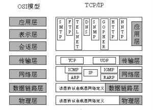

一：基于TCP/IP通信协议使用serversocket，Socket来建立网络通信 JAVA基础 TCP/IP协议在通信的两端各建立一个socket，从而形成网络虚拟链路 java使用Socket对象来代表两段的通信接口，并且通过Socket来产生I/O流来进行网络通信- 1.1tcp/ip协议基础 ip协议是Internet的关键协议，通过IP协议使internet成为可以互相连接不同电脑的网络，ip协议只负责将消息分割成一个个小包然后发送和接收；ip协议保证了计算机之间可以发送和接收数据 tcp协议被称为端对端协议， tcp协议会让两台计算机之间建立一个连接（用于发送和接收数据的虚拟链路），tcp协议只负责收集一个个的数据包然后将其按适当顺序放好传送，在接收端收到后再将其正确返回；tcp保证了数据的完整和准确 tcp使用重发机制，如果没有收到另一端返回的确认信息，则会重新发送
 1.2 使用ServerSocket创建TCP服务器端- 在tcp通信的两个实体之间看起来并没有服务器和客户端之分，但那是在已经建立好虚拟链路的情况下（android疯狂讲义P562 13.1.2） 所有必须有一个实体先做出主动姿态，主动的来接收其他通信实体的连接请求 1.2.1：服务器端 ：java中能接收其他通信实体连接请求的类是 ServerSocket Serversocket包含一个监听来自客户端连接请求的方法 ： Socket accept（）：如果接收到连接请求，将返回一个与连接客户端对应的Socket,否则将一 直处于 等待状态，线程被柱塞 为了创建Serversocket对象，java提供了几个构造器 ServerSocket(int port)：指定监听端口 0~65535 ServerSocket(int port，int backlog) :增加一个用来改变连接队列长度的参数 ServerSocket(int port，int backlog，inetAddress localaddr):在服务器存在多个IP地址时， 可以通过localaddr这个参数来指定将ServerSocket绑定到指定的ip地址 例子： [java]//创建ServerSocket ServerSocket server=new ServerSocket(4000); //循环监听 while(true){ Socket s=server.accept(); //开始使用Socket通信 } [/java] 1.2.2：客户端：通常使用Socket类的构造器来连接到指定服务器 为了创建Socket对象，java提供了几个构造器 Socket（inetAddress/String remoteAddress,int port）:创建连接到指定主机，远程端口的Socket，该构造器没有指定本地地址，本地端口，默认使用本地主机的默认IP地址，默认使用系统动态分配的端口。 Socket(inetAddress/String remoteAddress,int port,inetAddress loocaladdr,int localport) :创建连接到指定远程主机，远程端口的Socket，并制定本地IP地址和本地端口，适用于本地主机有多少个IP地址的情形。 通常使用String对象来指定远程主机的IP地址，当本地主机只有一个IP时使用第一个更方便 例子： [java] //创建连接到指定地址和端口的Socket Socket s =new Socket("139.129.132.128",4000); //使用Socket通信[/java]
当客户端和服务器端产生了对应的Socket后，就无需再区分服务器和客户端了，而是通过各自的Socket来通信，
Socket提供了两个方法来获取输出流和输入流
InputStream getinputStream（） ：返回该Socket对象对应的输入流，让程序通过该输入流从Socket中取出数据。
{kind=link}